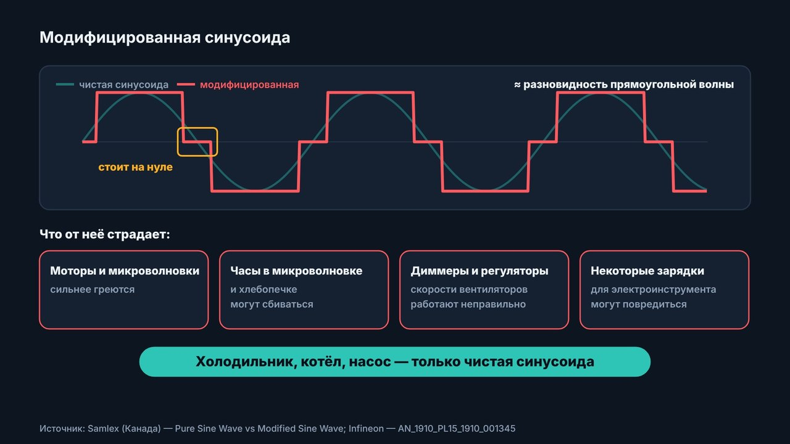
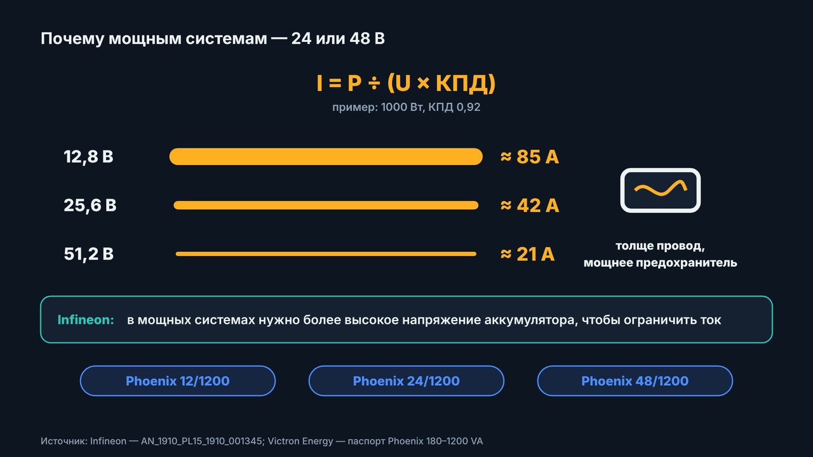

Як влаштований інвертор і як читати його паспорт
Інвертор робить із 12 В постійного струму акумулятора 230 В змінного, як у розетці. Розбираємо, що в нього всередині, чому для холодильника, котла й насоса потрібна тільки чиста синусоїда і які рядки паспорта перевірити перед покупкою.
Ролик російською, 5:36. Не відкривається? Дивитися на YouTube або читайте розбір нижче — у ньому все те саме.
Впишіть потужність своїх приладів і найпотужнішого мотора — калькулятор покаже, яка потрібна тривала й пікова потужність і який струм піде від акумулятора.
Відкрити калькуляторДва завдання інвертора
Акумулятор дає постійну напругу: 12 В, завжди в один бік. У розетці напруга змінна: вона плавно зростає, падає, змінює напрямок, і повний цикл повторюється 50 разів на секунду. Тому в інвертора два завдання: підняти 12 В до 230 В і змусити напругу коливатися 50 разів на секунду.
Як виходить хвиля
Усередині стоять електронні ключі — транзистори, з'єднані мостом; в еталонній схемі Infineon це чотири групи ключів. Вони підключають акумулятор до виходу то в один бік, то в інший. Якщо просто перемикати їх 50 разів на секунду, вийде прямокутник. Тому ключі клацають набагато частіше — у схемі Infineon 20 000 разів на секунду — і змінюють ширину імпульсів: посередині півхвилі імпульси довгі, по краях короткі. Обмотка трансформатора й конденсатор згладжують імпульси, і на виході виходить синусоїда.

Чому інвертори однієї потужності важать по-різному
Напругу піднімає трансформатор, і він буває двох видів. Залізний на 50 Гц Infineon у своїй схемі описує як великий і дуже важкий — його навіть ставлять окремо від плати. Другий вид — трансформатор на феритовому осерді, який працює на високій частоті; Victron використовує таку технологію в інверторах Phoenix і пише, що вони виходять компактними й легкими.

Чиста чи модифікована синусоїда
Дешеві інвертори з модифікованою синусоїдою не роблять плавну хвилю: напруга різко зростає й падає і якийсь час стоїть на нулі, перш ніж змінити напрямок, — по суті це різновид прямокутної хвилі. За даними виробника інверторів Samlex, від неї двигуни й мікрохвильовки сильніше гріються, годинники в мікрохвильовках і хлібопічках можуть збиватися, димери й регулятори швидкості вентиляторів працюють неправильно, а деякі зарядки для акумуляторів електроінструменту можуть пошкодитися. Infineon теж пише, що інвертори із синусоїдою кращі, щоб не навантажувати деякі типи приладів. Для холодильника, котла й насоса — тільки чиста синусоїда.

1Потужність: вати при 40 °C і пік
Приклад — Victron Phoenix 12/1200. Перший рядок паспорта — 1200 ВА; це не вати. Нижче: тривала потужність 1000 Вт при 25 °C і 900 Вт при 40 °C — у спеку інвертор віддає менше, тому рахуйте за ватами й за найгіршою температурою. Пікова потужність 2400 Вт — запас на короткий ривок, наприклад на запуск компресора холодильника. Пуск компресора беремо як 5 × робочої потужності, як в випуску 1.

2ККД, холостий хід і режим пошуку
Максимальний ККД версії на 12 В — 92 %. Холостий хід — 6 Вт: стільки інвертор бере сам, навіть коли нічого не підключено; за 10 годин це 60 Вт·год. У режимі пошуку інвертор майже засинає і бере близько 2 Вт, поки не ввімкнеться навантаження. У випуску 1 ми рахували 8 Вт холостого ходу — так у старішій версії паспорта (rev03), розрахунок вийшов із запасом.

3Вхідна напруга
Версія на 12 В працює від 9,2 до 17,3 В. При 10,9 В попереджає, що акумулятор сідає, при 9,2 В вимикається і знову вмикається, коли напруга підніметься до 12,5 В. Це захист від глибокого розряду, але для свого акумулятора все одно дивіться його інструкцію та налаштування.

4Чому потужним системам — 24 або 48 В
1000 Вт від літієвого акумулятора на 12,8 В — близько 85 А, на 25,6 В — близько 42 А, на 51,2 В — близько 21 А. Що більший струм, то товщі дроти й потужніший запобіжник. Infineon пише, що в потужніших системах потрібна вища напруга акумулятора, щоб обмежити струм; тому Victron випускає той самий інвертор на 12, 24 і 48 В.

Чек-лист: як читати паспорт інвертора
- Чиста синусоїда (pure sine wave).
- Тривала потужність у ватах при 40 °C, а не тільки при 25 °C, — більша за суму ваших приладів.
- Пікова потужність — більша за пусковий ривок.
- Холостий хід менший і, якщо є, режим пошуку.
- Вхідна напруга — як у вашого акумулятора; подивіться, за якої напруги інвертор вимикається.
Переріз кабелю й запобіжник — за інструкцією вашого інвертора.
Джерела
- Victron Energy (Нідерланди) — паспорт Phoenix Inverter 180–1200 VA: 230 В, 50 Гц; 12/1200: 1200 ВА, 1000/900 Вт при 25/40 °C, пік 2400 Вт, ККД 92 %, холостий хід 6 Вт, пошук 2 Вт, вхід 9,2–17,3 В; «hybrid HF technology».
- Victron Energy — паспорт Phoenix Inverter, rev03: холостий хід 8 Вт.
- Infineon (Німеччина) — Low frequency transformer based SOHO UPS design: повний міст, ШІМ 20 кГц, залізний і феритовий трансформатори, напруга акумулятора і струм.
- Samlex (Канада) — Pure Sine Wave versus Modified Sine Wave: форма модифікованої синусоїди і що від неї страждає. Європейського джерела з таким переліком ми не знайшли.
Перевірено 15 листопада 2026 р. Знайшли помилку — напишіть у коментарях під роликом.